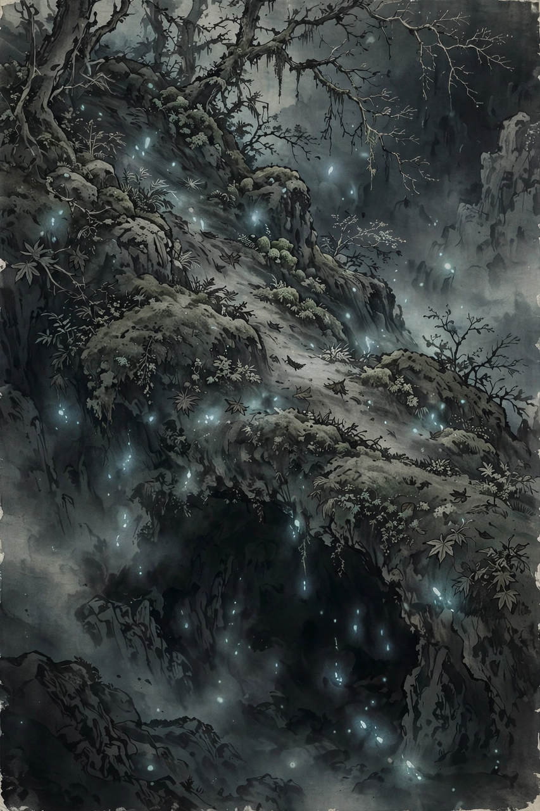

| Yomi | |
|---|---|
| Japanese | 黄泉 (Yomi / Yomotsukuni) |
| Tradition | Shinto mythology |
| Ruler | Izanami (Yomotsu-ōkami) |
| Entrance | Yomotsu Hirasaka, Izumo Province |
| Contrasted with | Takamagahara (the heavens) |

Yomi or Yomotsukuni (黄泉, 黄泉国) is the Japanese underworld — the land of the dead in Shinto mythology, described in the Kojiki and Nihon Shoki. Like the Greek Hades or the Hebrew Sheol, it is a gloomy realm beneath the earth where the dead continue a shadowy existence. Once a person has eaten the food of Yomi, they belong to it and cannot return to the land of the living.
Yomi is known above all from the story of Izanagi, who descends into the underworld to retrieve his wife Izanami after she dies giving birth to the fire god Kagutsuchi. He finds her in darkness and begs her to return, but she replies that she has already eaten the food cooked at the hearth of Yomi and must consult the gods of the place. She forbids him to look at her; impatient, Izanagi lights a tooth of his comb as a torch and sees her corpse rotting and swarming with maggots, with the eight thunder gods dwelling in her body.
Horrified, Izanagi flees, pursued by the hags of Yomi (yomotsu-shikome), the armies of the underworld, and finally by Izanami herself. At Yomotsu Hirasaka, the slope forming the boundary between the worlds, he blocks the pass with a boulder that a thousand men could not move. Across it the two exchange their final words: Izanami vows to strangle a thousand of the living each day, and Izanagi answers that he will cause fifteen hundred to be born. Izanami thereafter reigns in Yomi as Yomotsu-ōkami, the Great Goddess of Yomi.
Unlike later Buddhist-influenced conceptions of the afterlife, Yomi is not a place of judgement, reward or punishment: it is simply the polluted realm of death, and contact with it requires ritual purification — Izanagi's bathing after his escape gives birth to further kami, including Amaterasu, Tsukuyomi and Susanoo. The traditional entrance to Yomi was located in the former province of Izumo, in what is now Shimane Prefecture.